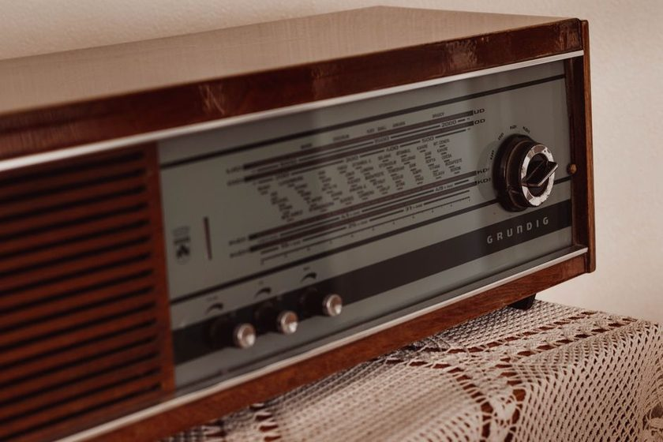

Why the Log Matters More Than the Catch

A signal that arrives once is a story worth telling at breakfast. A signal that arrives on the same evening, at roughly the same hour, across a dozen dated entries, is closer to a fact. The distinction sounds obvious written out like that, and it is almost always lost in the moment — a station coming in clean on a quiet band after weeks of nothing feels like the night's real achievement, and the log entry that records it can read like an afterthought scribbled on the way to bed. It isn't an afterthought. The entry is what turns a good night into evidence, and evidence is the only part of the hobby that survives past the excitement of the catch itself.
The night that feels like the point
Picture a September evening: a thin carrier resolves out of the noise, holds for two or three minutes, and turns out to be a station nobody at this desk had logged before. It feels like the payoff of the whole exercise — the reason for the antenna in the yard and the hours spent turning a dial for not much. But a single catch, however clean, is a sample size of one. It proves the station was reachable that night, from that antenna, under whatever the ionosphere happened to be doing at that hour. It proves nothing about whether the opening was typical, seasonal, or a fluke that won't repeat for another year.
What one entry can't answer
A lone entry can't say whether an opening belongs to a season or to one unusually calm night. It can't say whether the hour matters more than the antenna, or whether a slightly different frequency would have caught the same station forty minutes earlier. A modest wire in a rented yard hears different things at different hours regardless of what shows up in a single log line, and no single line can separate the wire's habits from the sky's. Those questions only get answered by entries that repeat — dated, timestamped, compared against each other rather than against memory of one good night.
A catch proves a station was reachable once. A log proves what the wire does, night after night, when nobody is listening for a headline.
What a year of entries can answer
Keep logging past the memorable nights and a shape starts to show up that no single session could reveal. The same frequency opens within the same twenty-minute window on most clear evenings. A band that seemed dead in January turns reliable again by April. A grayline opening that repeats twice a day only becomes visible as a pattern once enough dated entries sit next to each other on the page — the first time it happens, it just looks like luck. By the twentieth time, at the same hour, it looks like something the log can actually predict.
Pattern versus anecdote
One entry is an anecdote — interesting, but unrepeatable by definition. A pattern needs at least a handful of dated repeats before it earns the word. Until then, the honest label for a single good catch is exactly that: a single good catch, not a discovery about the band.
Cross-referencing turns the log into a record
A log becomes trustworthy the moment something outside it can check it. A confirmation card is one such check — one card took four months to arrive, long enough that the original entry had to be dug up rather than recalled, and the date and frequency on the card either matched the logbook line or they didn't. A single memorable catch, unlogged or vaguely dated, has nothing to be checked against. It sits in memory alone, gradually improving in the retelling the way memory tends to do, until there's no way left to tell what actually happened from what sounds good now.
| Question | One good catch | A year of dated entries |
|---|---|---|
| Was the station reachable? | Yes, that one night | Yes — and on which other nights, too |
| What hour does it open? | Unknown | A recurring window, visible across entries |
| Is the opening seasonal? | Unknown | Visible once entries span several months |
| Can it be cross-checked? | Only against memory | Against dated entries and confirmation cards |
| Is it worth calling a pattern? | No, not yet | Yes, once it repeats on the page |
What only accumulation reveals
A handful of things never show up in a single session, no matter how good that session was. A dated log, kept honestly over months, is the only place they surface:
- Whether a band opening is tied to the hour, the season, or neither.
- Whether a given antenna favors certain frequencies consistently, or only seemed to that one night.
- Which stations show up reliably enough to plan a listening session around.
- How closely the log's own patterns track known propagation behavior, rather than wishful thinking.
Why the log outlasts the catch
None of this makes any single night less enjoyable to sit through. The point isn't to stop noticing a good catch when it happens — it's to write it down the same plain way as every ordinary entry, so it can eventually take its place in a pattern rather than standing alone as a story that gets better each time it's told. A logbook kept for a year is not a highlight reel. It's closer to a modest, dated instrument for finding out what the wire and the sky actually do together, which turns out to be more interesting, over time, than any single evening could be on its own.
A note on this piece
This reflects one listening desk's experience of logging over time, not a formal study of propagation. Individual results vary by location, antenna, and season — treat it as an observation to test against your own log, not a guarantee of what any given band will do.